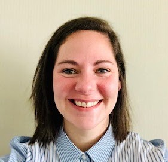
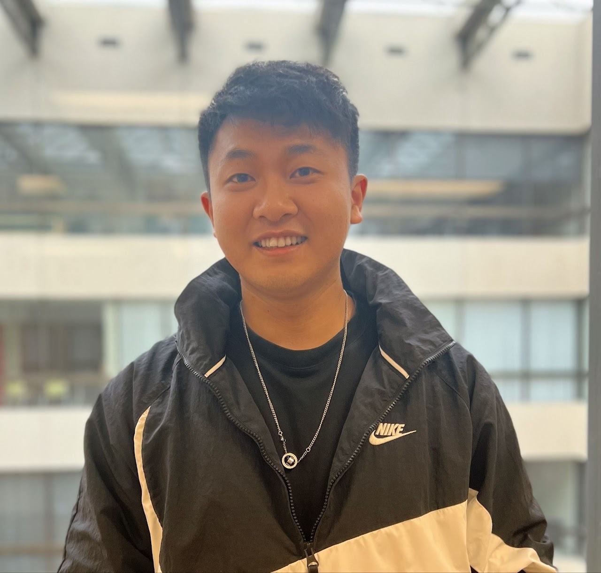
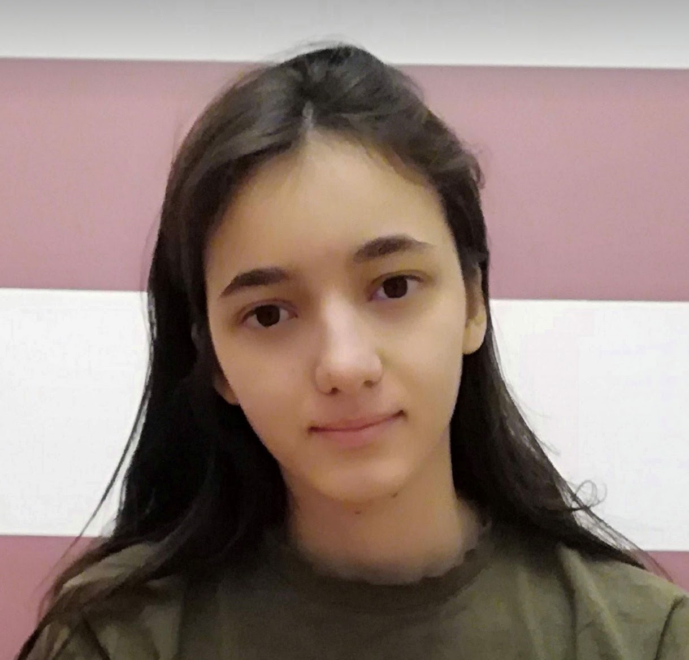
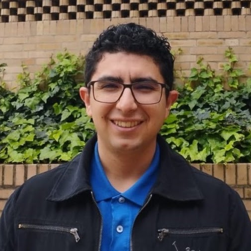
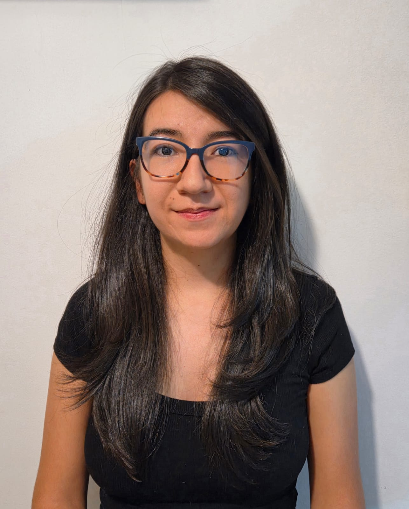
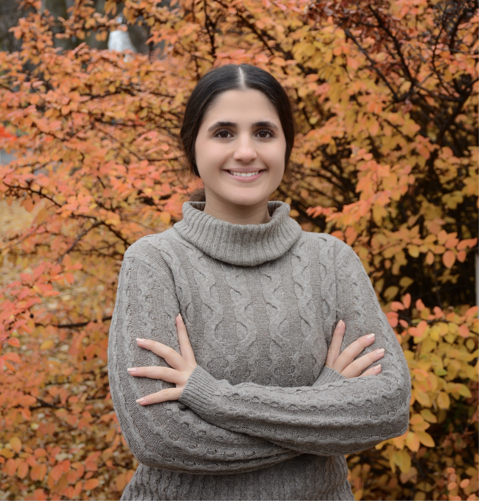

Bulut Research Group
Our group brings together graduate students in the Measurement, Evaluation, and Data Science (MEDS) program at the University of Alberta. We work on computational psychometrics, educational measurement, and assessment, extended with learning analytics, AI, and large language models.
Students work on research projects under my supervision through an apprenticeship model. Junior and senior students team up on each project, so new members build their skills and get early exposure to high-quality research. Over time, they take on more responsibility for leading projects and mentoring junior members of the lab.
Lab location: Education Centre North 6-110, University of Alberta, Edmonton
Published with lab members
A rolling look at recent journal articles our group has written together. Select a paper to read it.
Current Lab Members

Ashley Clelland
MEDS, University of Alberta · 2022–present
Ashley is interested in applied measurement, data science, and evaluation in the context of public health and education, especially psychometric instrument development and data literacy assessment.

Bin Tan
MEDS, University of Alberta · 2023–present
Bin is interested in applying the methods and techniques in artificial intelligence and data science to modeling educational and psychological constructs (e.g., well-being and motivation).

Elisabetta Mazzullo
MEDS, University of Alberta · 2024–present
Elisabetta is interested in test development, computational psychometrics, and the application of artificial intelligence (AI) technologies to digital assessments in various educational settings.
Joyce Liu
MEDS, University of Alberta · 2025–present
Joyce is interested in computational psychometrics applications, both in low-stakes and high-stakes assessments, to gain deeper insight into students’ learning and competencies.
Kevin Vo
MEDS, University of Alberta · 2023–present
Kevin is interested in utilizing data science, particularly machine learning and educational data mining, to enrich our understanding of important educational and psychological variables.

Daniel Jerez Garcia
MEDS, University of Alberta · 2024–present
Daniel is interested in analyzing large collections of data from educational settings to address important educational and psychological questions.
Eunji Kim
MEDS, University of Alberta · 2025–present
Eunji is interested in applying quantitative and data-analytic methods to address empirical questions in educational measurement, evaluation, and learning.

Andrea Gonzalez Garcia
MEDS, University of Alberta · 2026–present
Andrea is interested in using quantitative and computational methods to understand complex educational constructs and generate actionable evidence to support educational decision-making.

Mahshid Shafaghat Ardabili
MEDS, University of Alberta · 2026–present
Mahshid is interested in exploring how computational tools can support the creation of clearer and more insightful assessments for learners.
Prospective students
My lab's work starts from computational psychometrics, educational measurement, and assessment, and extends them with learning analytics, AI, and large language models. If that is the kind of research you want to do, please go through the prospective student checklist before you email me.
Lab news
Recent work with lab members
Papers and talks co-authored with current students and former advisees.
Former advisees
Graduates of my lab have moved on to faculty positions and professional roles at institutions across North America.
- Tarid Wongvorachan — Ph.D. Assistant Professor, University of Saskatchewan
- Guher Gorgun — Ph.D. Assistant Professor, University of Georgia
- Seyma Nur Yildirim-Erbasli — Ph.D. Associate Professor, Concordia University of Edmonton
- Karen Fung — Ph.D. Vice-President, Psychometrics and Data Analytics, The Pharmacy Examining Board of Canada
- Jiaying Xiao — M.Ed. Psychometrician, ETS
- Derek Radford — M.Ed.